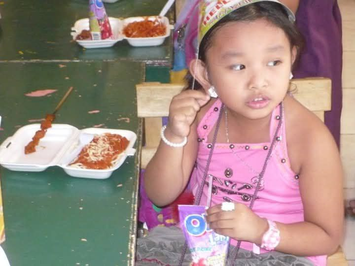
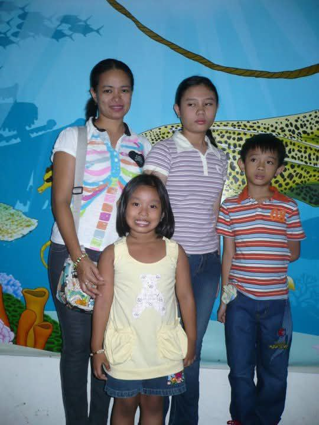

1 Before I get started with my story, I would like to introduce myself, cuz’ why not right? I’m Trisha Nicole T. Galacinao, 19 years old and an only child.
2 Born in the province of Isabela, wherein my childhood was filled with adventure and a profound sense of curiosity.
3 Growing up in a vibrant neighborhood where the air was always fresh and the skies were often painted with vibrant sunsets.
4 I was surrounded by a diverse group of children, and we spent countless of hours exploring the world around us not minding everything.
5 Just us filled with the sounds of laughter and enjoyment, a pure bliss to be exact.
6 My mother, also a teacher taught me how to read and write.
7 She was strict with me but I understand that, because that is how she shows that she truly wants me to learn and explore new things.
8 Within my childhood years, I was once a troublemaker, always on the go and always returning home with a wound left in my body.
9 Always curious, always questioning things, and I often wandered around the neighborhood, searching and looking all the places, I and we would explore.
10 I’ve learned how to ride a bicycle, thanks to my friends, play dress ups, cooking and many more that a child or children do when they are young.
11 Upon entering a school, there are so many people chatting and playing and it was a place of wonder for me, where I discovered my love for reading and storytelling.
12 Often losing myself in the pages of books that transported me to different realms.
13 Transporting to another world, expecting those things are real which fueled my imagination and desire to gain more new knowledge and readings about those.
14 School was fun, I learned something, shared secrets with them, waking up being late in the class and participating in the activities.
15 What I will never really forget is that I participated star scout to girl scout even though I always end up being sick.
16 I don’t know why but I enjoyed participating.
17 Cooperating with other girls that I don’t even know, I just casually talks to them and we became friends afterwards.
18 Star and Girl Scout was fun, the teachers also taught us how to tie a knot, form a bond with others, cooking, sewing and go to other places like other schools.
19 Family vacations were another highlight of my childhood, as we traveled to various cities, where I developed a profound appreciation for nature and for the environment.
20 These experiences shaped my character, teaching me the importance of exploration and the beauty of the world.

Kindergarten ft. My Birthday

Ocean Park with my Mom and cousins
1 Progressing into adolescence introduced a countless of challenges and self-discovery that marked my teenage years.
2 These years were a true rollercoaster, with my life changing in unexpected ways.
3 I was often lost in the shadows of my aspirations, unable to voice the weight of my emotions.
4 Despite this chaotic environment, I found solace in friendships where I met them and thankful to have them in my life.
5 Through ups and downs, they are here to support me to the end and providing laughter and understanding I needed.
6 High school was not solely about academics, it also provided a space for growth and self-exploration.
7 Though often I fought feelings of hopelessness and confusion, the challenges of adolescence taught me resilience and empathy, a journey that shaped my character.
8 And of course, the travelling experience again.
9 My family and I never get tired when it comes to travelling.
10 Within my childhood experiences up to my teenage years, we go on an adventure together.
11 My family always has a special place in my heart and I love them even though I’m too shy to say that in front of them.
12 Also, in my teenage years where the COVID 19 starts, everyone panics, I never forgot that because I had my birthday before the pandemic strikes.
13 It is not easy to adapt to new things, like Online classes, staying at home, no contact to other person.
14 But I also discover Anime, despite the no contact with others, I found anime, my peace and comfort against the world.
15 Anime made a huge impact on me, it makes me happy, cry and all sorts of emotions I don’t know I have.
16 And when the Philippines starts to rise up again, that’s when my Senior year comes.
17 I had a great time there, the friendship I didn’t expect to form and bond despite our different attitudes.
18 And I also didn’t expect that I met him, that was so unexpected but he made me realize things I didn’t know and he made me feel love again.
19 I’m also thankful for parents for granting my wish to have a Debut in my 18th birthday.
20 It was hectic and fun but it definitely engraves it in my heart and mind.
1 Progressing into adolescence introduced a countless of challenges and before I start my college years, my Debut Day was the most special thing that happened to me.
2 The pre debut photoshoots, the time when my debut started, the events and most especially is that my parents met him.
3 It was so magical and I’m teary eyed for all the things that happened.
4 To my family, him, my friends and the guests, thank you for sharing your time with me.
5 And here comes my college years, As I ventured into college, I embraced newfound freedom and independence that transformed my worldview.
6 The first thing I noticed was how the transition from high school to higher education presented unexpected hurdles, leaving me feeling somewhat lost initially.
7 And because I left province to continue my education in Manila.
8 My time travel from my province (Isabela) to Manila estimated a 10- 12 hours trip which leave me to exhaustion but it was worth it.
9 Because my family, my boyfriend and my friends supported me all the way.
10 The way they comfort me especially when I grew homesick because I miss them.
11 Each day is a struggle for me especially I’m their only daughter but eventually I adapt to the surroundings.
12 Thankfully to my skills, I become an ambivert by choice because college is a constant survival and I also meet great companies that I have now and forming deep connections with them.
13 Additionally, I discovered the importance of self-care and time management, making each moment count.
14 As I reflect on this transformative period, I see how college molded me into the person I am today, an individual equipped to face life’s challenges with courage and optimism while valuing the bonds formed along this journey.
15 And always waking up to become a person who will study and work hard.
16 Be a positive person in this life full of negativity.
17 And for my family that always providing me the needs and for my tuition fees.
18 For encouraging me to tour around the Manila, for buying me foods and for my wants.
19 To my boyfriend who is always patient with me, for understanding me, for bringing joy and laughter and for all your hard work and appreciation, thank you for loving and choosing me.
20 To my friends in the province, that I could not barely met due to our conflict schedules, I hope we could have a time for ourselves, chatting and laughing.
21 All through these years, thank you is not enough to thank them, so I need to pull myself together and finished my college and enter a great company in the future to give back everything they worked hard for.